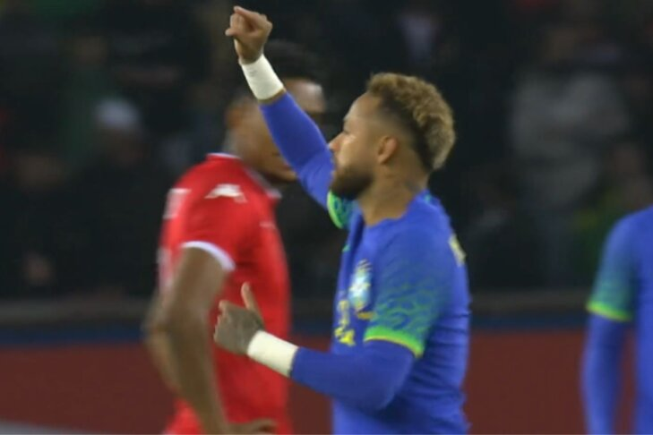

Após cumprir suspensão contra a Venezuela, Neymar volta a defender o Brasil
nas Eliminatórias para Copa de 2022 neste domingo diante da Colômbia.E com a Seleção
virtualmente classificada, o craque do PSG já pensa no Mundial do Catar.
Torneio que pode ser seu último com a camisa amarelinha.
Em entrevista à emissora DAZN, Neymar, atualmente com 29 anos,
fez a sincera e surpreendente confissão.
Acho que é minha última Copa do Mundo (2022).
Eu encaro como a minha última porque não sei se terei mais condições, de cabeça,
de aguentar mais futebol. Então vou fazer de tudo para chegar muito bem,
fazer de tudo para ganhar com meu país. Para realizar o meu sonho desde pequeno
e espero poder conseguir - disse Neymar, que terá 34 anos no Mundial de 2026,
que será realizado em conjunto por EUA, Canadá e México.